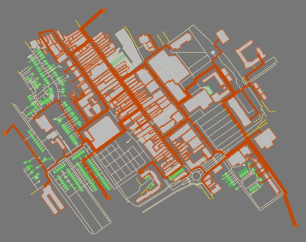
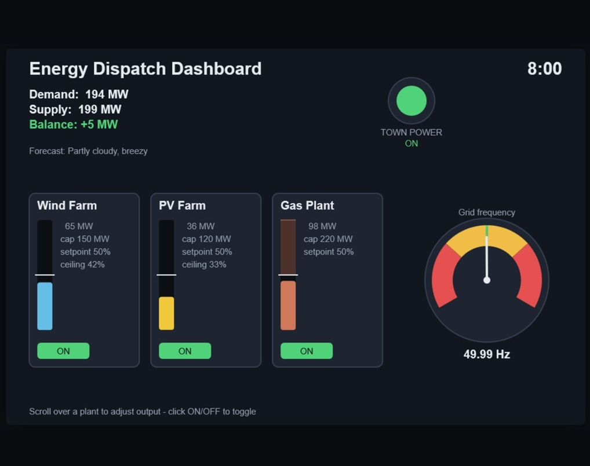
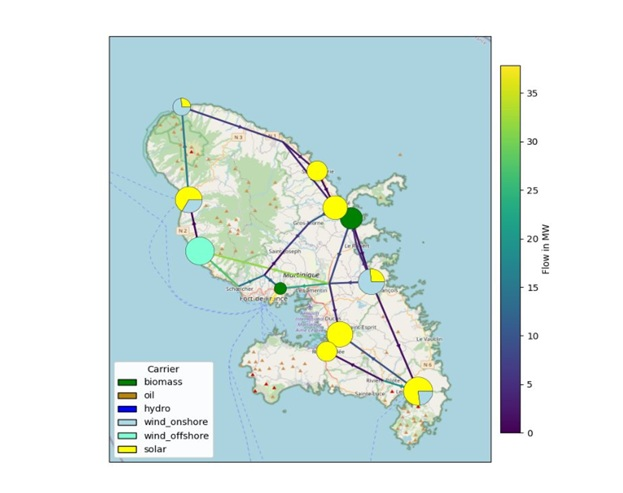
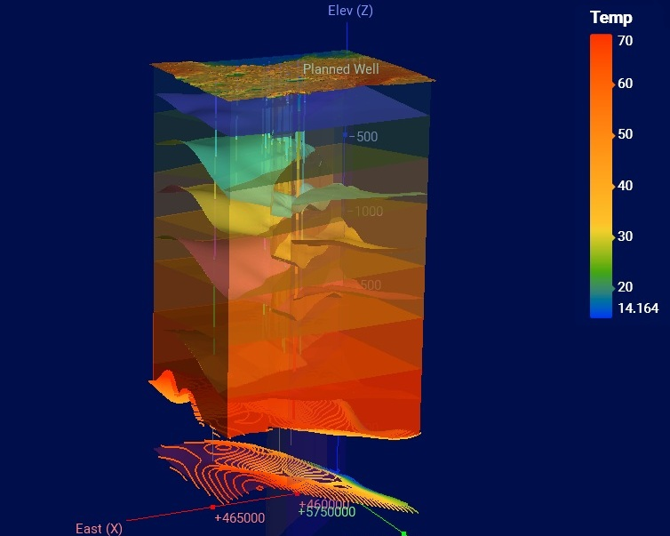
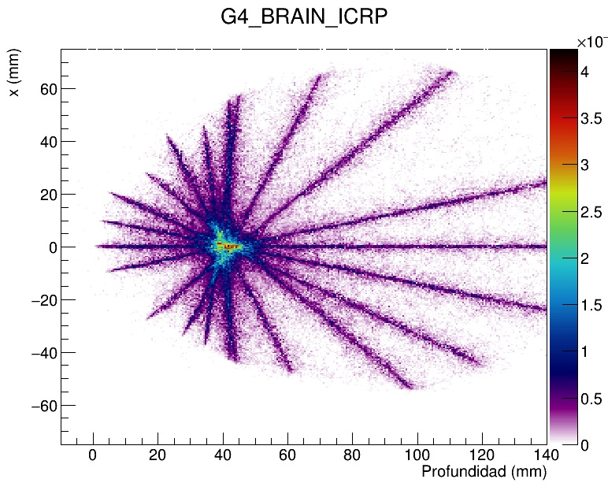

Simulation and optimization of a heat grid with Thermos.

An energy dispatch game. Try the game here

Modeling and optimization of an island's grid with PyPSA.

Planning of a well for Geothermal Energy in Leapfrog.

Simulation and comparation of different radiotherapy techniques with Geant4.
The project focused on the design and optimization of a district heating network for a small district using THERMOS. The objective was to determine the most cost-effective and environmentally sustainable combination of heat generation technologies, heat distribution infrastructure, individual heating systems, and thermal storage to meet the varying heat demands of the buildings while minimizing total costs and CO₂ emissions.
The study included the definition of building connection options, heat generation sources, technical and economic parameters, counterfactual heating systems, tariffs, fuel prices, emission factors, and optimization constraints. The Network and Supply simulations were used to identify the optimal network configuration and heat supply mix, and the resulting generation, operating/investment costs, and CO₂ emissions were evaluated to determine the overall performance of the proposed heating solution.
A little simulation game made for fun where you have to manage electricity dispatch to keep a town's electric grid healthy. The game is a good tool to show non-experts how difficult it can to manage an electricity system manually, especially with generation sources that depend on weather.
Scroll up or down to vary the generation of the three power plants, or turn them off completely to keep the frequency at 50 Hz.
The project focused on modelling and optimizing the energy system of a selected geographical region using PyPSA. The objective was to determine an optimal energy mix by considering electricity demand, renewable energy potentials, conventional generation, grid infrastructure, energy storage, and sector-coupling technologies, with the aim of minimizing system costs and CO₂ emissions while maintaining reliable energy supply.
The model incorporated the region’s grid network, demand profiles, generation technologies, storage systems, and relevant sector-coupling technologies. Different cost and emission constraints were analyzed through sensitivity analysis to evaluate their impact on the optimized energy system. The main results included the optimized system cost, CO₂ emissions, renewable share of the energy mix, and the impact of sector coupling, providing insights into potential pathways for a more cost-effective and low-carbon energy system.
Data from real geological explorations was used to simulate the stratigraphy of the area of interest in Leapfrog. Faults, lithologies, porosity and temperature were the characteristics included in the model. A well was planned in the modeled region, and the result were used to determine the depth with the biggest potential for geothermal energy applications.
The project focused on simulating and comparing conventional radiotherapy with state-of-the-art proton therapy to evaluate their effectiveness in treating brain tumors. Using Geant4, radiation transport simulations were performed on 3D models reconstructed from scans of a real brain tumor case, enabling a detailed comparison of dose distribution and treatment performance. An extensive literature review was conducted to benchmark the simulation results against existing research and clinical findings.
The results were analyzed to assess the advantages and limitations of proton therapy compared with traditional radiotherapy, with particular focus on treatment precision and dose delivery to healthy tissue. The findings and potential benefits of the technology were subsequently presented to potential investors, highlighting the project’s technical results and potential clinical and commercial relevance.